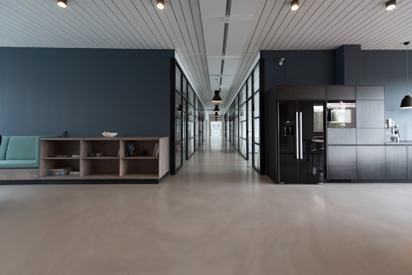

昭和61年創業、ボーリング工事の老舗
信頼と技術で業界をリードし続けています
私たちは「安全・信頼・迅速対応・技術力・スピーディ施工」をモットーに、 お客様のニーズにお応えし続けています。昭和61年創業以来、 ボーリング工事の老舗として30数年の実績と経験を積み重ね、 業界内でも良く知られた優良企業として発展してまいりました。

| 会社名 | 株式会社ニシボ |
|---|---|
| 設立 | 昭和61年（1986年） |
| 資本金 | 300万円 |
| 従業員数 | 29名（2017年12月現在） |
| 代表者 | 代表取締役社長 前原 章克 |
| 本社所在地 | 〒811-1311 福岡県福岡市南区横手3丁目39-19 |
|---|---|
| 電話番号 | 092-592-6533（代表） |
| FAX番号 | 092-592-6534 |
| 営業時間 | 平日 8:00-17:00 |
| 許可・資格 | 国土交通大臣許可（般-28）第24281号 |
精密な穴あけ工事を高い技術力で提供
構造物の補強・固定に最適なアンカー工事
軽量コンクリート材への精密穴あけ工事
壁面の精密切断工事を安全に実施
大型構造物の切断工事に対応
非破壊検査による構造物の安全確認
静的破砕による環境配慮型解体工事
コンクリート構造物の解体・斫り工事
福岡市南区にてボーリング工事を主事業として創業
ダイヤモンドコア工事部門を新設、技術力向上に注力
X線調査、RCレーダー調査などの非破壊検査技術を導入
品質管理体制を強化、顧客満足度向上に取り組む
最新機器導入により、より精密で効率的な工事を実現
工事管理システム導入、現場の効率化を図る
持続可能な経営と技術革新で、さらなる発展を目指す
商業施設やオフィスビルでの配管・配線工事、構造補強工事を手がけています。
病院や介護施設での精密工事。医療機器設置に関わる高精度な作業が得意分野です。
橋梁、道路、上下水道などの社会インフラ整備に長年携わってきました。
製造業の生産設備設置、メンテナンス工事など産業分野でも豊富な実績があります。
創業以来無事故を継続。徹底した安全管理で現場の安全を確保しています。
ISO基準に準拠した品質管理システムで、常に高品質なサービスを提供。
騒音・振動を抑えた工法の採用で、周辺環境への影響を最小限に抑制。
最新技術の導入と技術者の継続的な教育で、技術力の向上を図っています。